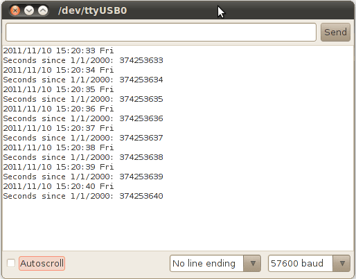
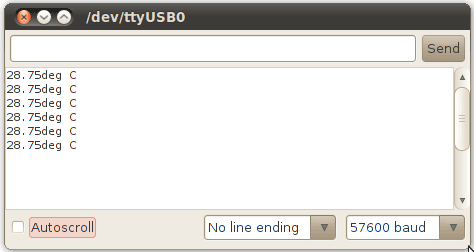
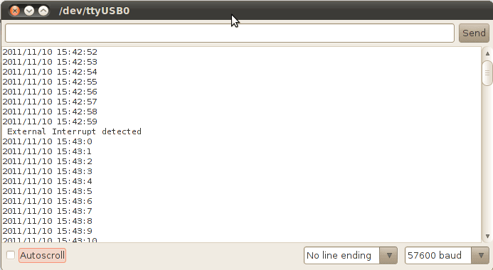

Seeeduino Stalker v2.2
Seeeduino Stalker is a feature rich Arduino compatible Wireless Sensor Network node with Data logger functionality. This is the current (and also the latest) version of Seeeduino Stalker.
The documentation for the previous discontinued versions are available here: Seeeduino Stalker v1.0 and Seeeduino Stalker v2.0
Look here for comparison between v1.0, v2.0 amd v2.1
Link to product page for this device (follow this link to buy):
Seeeduino Stalker Atmega 328P v2.2 : ARD104D2P
Seeeduino Stalker is a feature rich Arduino compatible Wireless Sensor Network node. It's modular structure and onboard peripherals makes it convenient to log time stamped sensor data on a periodic basis. Seeeduino Stalker comes with a Temperature sensor, RTC with backup power, SD Card Socket, Bee Socket and Solar LiPoimer Ion Battery Charger. The Seeeduino Stalker is a good candidate for all your tracking, monitoring and control projects.
It is enhanced with user requested features in its v2.2 iteration.

Seeduino Stalker v2.2.jpg
Features
- Compatible with Seeeduino (I/O ports use 3.3V Logic). Can be programmed with Arduino Processing language.
- Onboard microcontroller: ATMega328P
- Onboard Real Time Clock chip (Socket for a CR2032 Cell which acts as a backup power source for RTC)
- Serial interface with DTR for auto reset during programming when operating in standalone mode. (For programming, UartSBee must be bought separately)
- microSD card socket
- 4 Pin Grove header (operation voltage is selectable: 5.0V or 3.3V)
- I2C Pin header (operation voltage is selectable: 5.0V or 3.3V)
- User LED on Digital pin 8(PB0)
- Reset buttons for XBee Modules and ATMega328P
- Bee series socket - 2*10 pin 2.0mm pitch (which will mate with - one at a time - any of the wireless modules: XBee, BluetoothBee, GPSBee or RFBee.)

Stalker v2.2 diagram.jpg
Application Ideas
- Wireless Sensor Network (using XBee - bought seperately)
- GPS Logging (using GPSBee - bought seperately)
- Data Acquisition System capable of communicating with an App running on iPhone/Android Phone/Nokia Phone (using BluetoothBee - bought seperately)
- RF Remote Control (using RFBee - bought seperately)
- As a simple standalone Arduino compatible physical computing platform (UartSBee must be bought seperately for programming)
Error: image is invalid or non-existent
NOTE: Please note that UartSBee cannot be inserted into the Bee Series socket present on Seeeduino Stalker. The UartSBee is intended for interfacing the other Bee modules (shown in the photo above) to a computer and cannot itself be be inserted into the socket meant for these other Bee modules. There is a separate 5 way pinheader present on UartSBee as well as Seeeduino Stalker for interfacing them to each other. This pinheader is composed of: VCC (to supply power to Stalker), TXD, RXD, DTR (for controlling Stalker's Reset signal) & GND.
Cautions
- The product is provided as is without an insulating enclosure. Please observe ESD precautions specially in dry (low humidity) weather.
- Please disable bluetooth serial ports when using a Windows based development machine to prevent the Arduino IDE from freezing.
Schematics
Stalker v2.2 schematic.png
Specifications
Key Technical Specifications
| Microcontroller:
|
ATmega328P
|
| On Board Crystal
|
8 MHz
|
| PCB size:
|
in millimeter
|
| Indicators:
|
Reset, Power, LED on PB0 (Arduino Pin 8)
|
| Power supply:
|
3.7v Lipo Battery, Use 5VDC solar panel for charging the battery.
|
| Power Connector:
|
2 pin JST/ USB
|
| I/O counts:
|
20
|
| ADC input:
|
Dedicated 4 channel (ADC0~ADC3, 10 bit resolution)
|
| Connectivity:
|
I2C, UART, SPI
|
| DS3231 RTC Accuracy:
|
±2ppm from 0°C to +40°C / ±3.5ppm from -40°C to +85°C
|
| DS3231 Temperature Sensor Accuracy:
|
±3°C
|
Electrical Characterstics
| Specifications
|
Min
|
Norm
|
Max
|
Units
|
| Battery JST Input voltage
|
3.5
|
4.2
|
4.2
|
Volts (DC)
|
| Solar JST Input voltage
|
4.6
|
5
|
6
|
Volts (DC)
|
| Global Current Consumption
|
-
|
|
See note
|
mA
|
| 3.3V I2C voltage
|
3.2
|
3.3
|
3.5
|
Volts (DC)
|
| 5.0V I2C voltage
|
4.6
|
4.7
|
5
|
Volts (DC)
|
UART Baud Rate
(while programming)
|
-
|
-
|
115200
|
bps
|
Usage
Getting Started
If you are new to the "Physical Computing" world and if Seeeduino Stalker v2.2 is the first physical computing platform you want to begin with, then we suggest you to start with Seeeduino.
The following steps will help you assemble the hardware and software resources to get you started with Seeeduino Stalker v2.2
Step 1: Acquiring the Hardware
You will require the following hardware for running your first program.
|
UartsBee v4.0Required for programming the Seeeduino Stalker. Buy Here
|
Mini USB CableYou would probably have this one lying around, or if not, buy one here. We would use this to connect the UartsBee to one of the USB ports on your computer.
|
1 pin dual-female jumper wireRequired for connecting the UartsBee to Seeeduino Stalker.You might already have few lying around your workspace. If not, you can buy a colourful one here.
|
Step 2: Installing the drivers and plugging in the hardware
- UartSBee is like the multi-purpose Swiss Army knife of the Physical Computing world. There is a very detailed procedure to use UartSBee for both Windows and GNU/Linux users here. In our case it will perform three functions:
- Allow us to program the Seeeduino Stalker.
- Allow us to communicate with Seeeduino Stalker.
- Provide power (from USB power of your computer) to Seeeduino Stalker (including any peripherals connected to it).
- The first two functions of UartSBee (programming and communication) are achieved through an Integrated Circuit called FT232RL which is present on it. Before FT232RL can be used for these purposes, its drivers (certain freely available programs from FT232RL's manufacturer) must be installed on your windows/ubuntu based PC. So before proceeding further, download the driver setup file from here and install it on your Windows PC. (OS X Drivers also available and required for OS X)
- UartSBee has an onboard voltage regulator and a switch to allow you to select what voltage (5.0V or 3.3V) you would like to supply to the target circuit board. In our case the target circuit board is Seeeduino Stalker and so you would need to set this slide switch to 5.0 volts
- The wiring connection scheme of our hardware is "Computer→(Mini USB Cable)→UartSBee →(Flat Ribbon Cable)→Seeeduino Stalker". The jumper wires must be connected between UartSBee and Seeeduino Stalker before connecting the UartSBee to the Computer. Refer the photos below and make sure the signals line up as shown in the table (Note: The TXD and RXD pins must be cross connected as shown in the table).
- Next connect the Mini USB cable from UartSBee to your computer. If you are using a Windows based PC, the "Found New Hardware" balloon will popup and within a few moments the drivers for FT232RL (i.e. UartSBee) will be installed.
Seeeduino Stalker v2.1 Uartsbee 3.1 Connection.jpg
Jumper Wire connections
| Seeeduino Stalker
|
|
UartSBee
|
| USB5V
|
↔
|
VCC
|
| RXD
|
↔
|
TXD
|
| TXD
|
↔
|
RXD
|
| GND
|
↔
|
GND
|
| DTR
|
↔
|
DTR
|
Connection Notes
- Bee series socket - 2*10 pin 2.0mm pitch (which will mate with - one at a time - any of the wireless modules: XBee, BluetoothBee, GPSBee or RFBee.) Communication with these modules are done through UART.
- Serial interface – To save space and lower costs, USB<->Serial connectivity is not provided by default. You may use the FT232 based UartSBee or other USB to serial adapter boards to do the programming or communicate with the PC.
- User LED – An LED has been provided onboard for use in your application as desired.
- I2C Interface: Onboard I2C level shifter IC provides voltage translation between 3.3V and 5V devices. This allows you to connect I2C device to Stalker when it operating on 3.3 Volts.I2C device operating voltage depends on external voltage(LIPO_BAT and USB5V).
- Grove interface – Add Grove interface which is using D7/D8 .This allows you to connect 3.3V and 5.0V Grove module to Stalker when the it operating on 3.3 Volts.Grove module operating voltage depends on external voltage(LIPO_BAT and USB5V).
Jumpers and Connectors
microSD Card (TransFlash Card) Related
- CS_TF (Jumper type: Solder bridge - 2 way, Location: Bottom, Factory state: SS and PB2 connected by a thin track)
This jumper is a two way jumper made up of three pads: PB1, SS and PB2. SS is the Chip Select signal of the the microSD card. By default SS is connected by a thin track to PB2 - Digital Pin 10 (PB2) of the microcontroller. If instead you want to connect the Chip Select signal from the microSD card to Digital pin 9 (PB1), just cut the track between PB2 and SS and put a solder blob between SS and PB1.
- POWER_TF (Jumper type: Solder bridge - 2 way, Location: Bottom, Factory state: EN and VCC connected by a thin track)
This jumper is a two way jumper made up of three pads: VCC, EN and PD4. EN is the TF power regulator Enable pin. By default EN is connected by a thin track to VCC to always enable TF power. If instead you want to Control the TF Card power With Digital Pin 4 (PD4) of the microcontroller, just cut the track between EN and VCC and put a solder blob between EN and PD4. you can control TF Card Power by Digital Pin 4 (PD4), you would be able to completely turn off the microSD card to conserve power when operating out in the field.
Bee Module Related
- POWER_BEE (Jumper type: Solder bridge - 2 way, Location: Bottom, Factory state: EN and VCC connected by a thin track)
This jumper is a two way jumper made up of three pads: VCC, EN and PD5. EN is the XBee power Enable pin. By default EN is connected by a thin track to VCC to aways enable XBee Power. If instead you want to Control XBee Power by Digital Pin 5 (PD5) of the microcontroller, just cut the track between EN and VCC and put a solder blob between EN and PD5. You can control XBee Power by Digital Pin 5 (PD5), you would be able to completely turn off the Bee module to conserve power when operating out in the field.
Bee Module Related - Only XBee related
- WIRELESS_PROGRAMMING (Jumper type: Solder bridge, Location: Bottom, Factory state: Connected by a thin track)
You can use Digi's XBee modules to wirelessly program the ATmega328P on your Seeeduino Stalker. An XBee module must be configured and installed on your Seeeduino Stalker and another XBee module must be connected to your Laptop via a UartSBee. The pin DIO3 on the Seeeduino Stalker will be used to control the Reset Pin of ATmega328P. This jumper allows you to enable or disable (default: enabled) the control of the Reset Pin of ATmega328P by the DIO3 pin of the XBee module. You can cut the track between the pads of this jumper if you don't want the DIO3 pin to control the Reset pin of ATmega328P. Lady Ada has a nice tutorial on how to remotely program your Arduino based product using XBee. (NOTE: Both the XBee - the one on Stalker and the one connected to the PC must be pre-configured once using the X-CTU software before use.)
- RSSI_STATUS (Jumper type: Solder bridge, Location: Top, Factory state: connected by a thin track)
A red LED present on the top side of the PCB is connected to the RSSI (Received Signal Strength Indicator) pin of the XBee module. XBee outputs a PWM signal on this pin which is directly proportional to the quality of the RF link when the last packet was received by it. This PWM signal when applied to the LED would vary its brightness as per the quality of the RF link - better the link, brighter the LED. Since this LED would consume power, you can cut the track between the pads of this jumper to conserve battery power out in the field. RSSI value is also available over the UART using the DB command (measured in -dBm). (NOTE: The DB value only indicates the received signal strength of the last hop. If a transmission spans multiple hops, the DB value provides no indication of the overall transmission path, or the quality of the worst link – it only indicates the quality of the last link and should be used sparingly.)
User LED Related
- D8_LED (Jumper type: Solder bridge, Location: Bottom, Factory state: connected by a thin track)
A red LED present on the top side of the PCB is connected to the Digital Pin 8 (PB0) of the microcontroller. The LED is free for use by you in your program for any purpose you desire. Since this LED would consume power, you can cut the track between the pads of this jumper to conserve battery power out in the field and use Digital Pin 8 for other purposes like controlling a shield.
Battery Related
- CH_STATUS (Jumper type: Solder bridge, Location: Top, Factory state: connected by a thin track)
Two LEDs present on board Seeeduino Stalker indicate the charging status of the LiPo Battery. The Red SMD LED is connected to the CHRG (or CH) pin of the Lithium Battery charger IC (CN3083 or CN3063) which when glowing, indicates that the charging cycle of the battery is active. The Green SMD LED is connected to the DONE (or OK) pin of the Lithium Battery charger IC (CN3083 or CN3063) which when glowing, indicates that the battery is now fully charged. When operating Seeeduino Stalker out in the field, you can cut the track connecting the CH_STATUS pads to disconnect these LEDs from C_VIN and hence conserve power which would have otherwise been consumed in lighting these LEDs.
Real Time Clock (RTC) Related
- INT (Jumper type: Solder bridge, Location: Bottom, Factory state: NOT connected by a thin track)
Close this jumper to allow the Real Time Clock (RTC) to wake the ATmega328P at a specified time. This jumper will connect INT of the RTC Chip (DS3231) to PD2 (INT0) of ATmega328P.
Charge Status Read Demo
void setup()
{
Serial.begin(57600);
analogReference(INTERNAL);
analogRead(6);
}
void loop()
{
char CH_status_print[][4]= { "off","on ","ok ","err" };
unsigned char CHstatus = read_charge_status();
//read the charge status Serial.print("charge status -->");
Serial.println(CH_status_print[CHstatus]);
delay(500);
}
unsigned char read_charge_status(void)
{
unsigned char CH_Status=0;
unsigned int ADC6=analogRead(6);
if(ADC6 > 900) {
CH_Status = 0;
//sleeping
}
else if(ADC6 > 550) {
CH_Status = 1;
//charging
}
else if(ADC6 > 350) {
CH_Status = 2;
//done
}
else {
CH_Status = 3;
//error
}
return CH_Status;
} RTC
- Download and install the DS3231 library and sketches available in the resources section. DS3231 library includes modified version DateTime class by Jean-Claude Wippler at JeeLabs
- The demo sketches makes use of the fat16lib Arduino Library for accessing SD Card. Please install FAT16 Library from fat16lib's project page.
Adjust Date/Time
- Set Arduino board as
Arduino Pro or Pro Mini (3.3V, 8MHz) w/ ATmega 328 from Tools-->Board Menu of Arduino IDE.
- Open adjust.pde example from DS3231 library
- Set the current date/time using the DateTime Class object dt in the example:
DateTime dt(year, month, date, hour, min, sec,week-day(starts from 0 and goes to 6));
- Ex:-
DateTime dt(2011, 11, 10, 15, 18, 0, 5);
- compile and upload to Seeeduino Stalker v2.2

Seeeduino Stalker v2.1 adjust.png
Get Current Date/Time
- Set Arduino board as
Arduino Pro or Pro Mini (3.3V, 8MHz) w/ ATmega 328 from Tools-->Board Menu of Arduino IDE.
- Open now.pde example from DS3231 library
- The current date/time is read from DS3231 using
RTC.now() function.
- Ex:-
DateTime now = RTC.now();
- compile and upload to Seeeduino Stalker v2.2

Seeeduino Stalker v2.1 now.png
DS3231 Read Temperature
- Set Arduino board as
Arduino Pro or Pro Mini (3.3V, 8MHz) w/ ATmega 328 from Tools-->Board Menu of Arduino IDE.
- Open temperature.pde example from DS3231 library
- The current temperature in deg C is read from DS3231 using
RTC.getTemperature() function.
- The temperature register of DS3231 is normally updated only once in 64 Seconds.
- Hence, a forced conversion has to be initiated using
RTC.convertTemperature()
RTC.convertTemperature(); //convert current temperature into registers
Serial.print(RTC.getTemperature()); //read registers and display the temperature
Serial.println("deg C");

Seeeduino Stalker v2.1 temp.png
DS3231 Interrupts
This example is a demonstration of interrupt detection from DS3231 INT output. This feature is useful for data-logger functionality where the MCU is put to sleep mode when not in use and DS3231 INT wakes up the CPU periodically. This extends battery power. The complete operation is documented in the code.
- Solder PD2 and INT pins of INT jumper.
- This connects the DS3231 interrupt out pin to ATmega328 INT0 pin.
- Set Arduino board as
Arduino Pro or Pro Mini (3.3V, 8MHz) w/ ATmega 328 from Tools-->Board Menu of Arduino IDE.
- Open interrupts.pde example from DS3231 library
- compile and upload to Seeeduino Stalker v2.2

Seeeduino Stalker v2.1 interrupts.png
Data Logger Examples
The principal application of
Seeeduino Stalker v2.2 is data-logging of sensor signal like temperature along with the time-stamp. We have provided 3 sketches along with the DS3231 library demonstrating 3 different implementation. These sketches puts the MCU in sleep mode when not performing data sampling / logging operation. The complete implementation is documented very well in the code. The following section gives an overview :

Seeeduino Stalker v2.1 SolarPanel.png
- StalkerV21_DataLogger_Periodic.pde
- This sketch logs temperature data periodically to SD card configured by
RTC.enableInterrupts(periodicity) function.
- The periodicity is provided using predefined constants EverySecond or EveryMinute or EveryHour
- This sketch produces verbose output i.e the various events happening inside MCU are displayed in serial terminal.
- StalkerV21_DataLogger_5min.pde
- This sketch logs temperature data using to SD card configured by
RTC.enableInterrupts(h, m, s) function.
- The periodicity is provided using h, m and s. Once an interrupt is detected, the next interrupt time is updated by advancing the h,m and s value. The DateTime Class comes handy for this.
- ex:-
interruptTime = DateTime(interruptTime.get() + 300); //decide the time for next interrupt
- This sketch also produces verbose output i.e the various events happening inside MCU are displayed in serial terminal.
- StalkerV21_DataLogger_15Sec_NoSerialPort.pde
- This is similar to previous sketch with different data-log interval. All Serial Port related code is commented to reduce power consumption.
- There is no significant reduction in power consumption by removing Serial Port related code.

Stalker v2.1 datalogger flowchart.png
A note on power consumption
The following screenshot shows the current consumption measurement of
Seeeduino Stalker v2.2 @ 3.3V input connected to LIPO_BAT. In actual application LIPO_BAT is connected to a 3.7V LiPo battery. Hence, consider the following measurement with a pinch of salt.

Seeeduino Stalker v2.1 datalogger 15S Current Measurement.png
- We see active mode peaks every 15 Seconds. In active mode the MCU samples the temperature and stores it into SD card.
- The current consumption at sleep mode is 95.82 uA @ 3.3V (i.e 316.206 uW power consumption). Please note, that the SD Card VCC is still powered in this demo. To reduce the sleep mode current further, switch off the SD Card using the LDO enable pin by re-configuring the POWER_TF jumper. This might also increase the time taken for SD card to stabilize when VCC is applied.
- The current consumption at active mode peak is 22.43 mA @ 3.3V (i.e 74.019 mW power consumption)
- The current consumption at active mode second-peak is 3.64 mA @ 3.3V (i.e 12.012 mW power consumption)
- The active mode lasts for 400mS or 0.4 Seconds.
Alternative datalogger / SD Card library
Few Seeeduino Stalker users have developed a datalogger functionality for Seeeduino Stalker v1.0. This interesting implementation is mentioned here to highlight a different way of using SD card. Refer to A and B threads at the Arduino Forum.
Arduino-filelogger library used in these is available from Google Code arduino-filelogger project page. These sketches works only with Seeeduino Stalker v1.0. Interested users can port to Seeeduino Stalker v2.1 using the DS3231 library.
Accessories
Besides the various Bee Series modules, the following accessories are available for use with Seeeduino Stalker v2.0:
Water-proof Enclosure
for Seeeduino Stalker v2.0
|
SanDisk 2GB
microSD Card
|
microSD Card Reader
(in a capsule)
|
Mini USB cable for use with
UartSBee while programming
|
Single wire - Jumper Wires
|
Lithium Polymer (LiPo)
Battery
|
Solar Panel for
charging LiPo Battery via Stalker
|
Note: If you buy the "microSD Card Reader (in a capsule)", you would not need the "Mini USB cable" since the former also doubles up
FAQ
Here is the Seeeduino Stalker FAQ, users can list the Frequently Asked Questions here, example as below:
- Has the user defined switch been removed on version 2.x of Seeeduino Stalker?
- Yes, we have removed the user button on the version 2.x
- In version 1.0 of Seeeduino Stalker the microcontroller could be woken up from sleep mode via interrupt from the Bee module. Is this same feature also available on version 2.0?
- In the previous version (i.e. 1.0), the microcontroller could be woken on RF data packet reception by the Bee module via its pin 15 which was connected to INT0 (PD2) of the microcontroller. In the newer version, the INT0 (PD2) pin of the microcontroller is connected by a jumper (INT_RTC) to the INT pin of the RTC chip which can wake it up at a pre-configured time (or periodically). Since Seeeduino Stalker is meant for use as a wireless sensor network node, this modification would be useful in cases where the microcontroller must wake up periodically to transmit sensor readings and go to sleep again.
- The I2C pin headers on Version 1.0 of Seeeduino Stalker allowed easy connection to external 3.3V as well as 5.0V devices. Is the same feature available on the version 2.x?
- Yes, in fact we have improved it - previously PCA9306 was used for level translation on I2C bus. But now we use N channel MOSFETs for translation - this technique has many advantages (refer NXP's Application Note AN97055.
- There is no English datasheet for the CN3083, what do I do?
- We had used CN3083 on the beta revision of version 2.1 of Seeeduino Stalker (v2.1). The final v2.0 version will have CN3063 on it. The datasheet for CN3083 is only available in the Chinese language. On the other hand, CN3063 has an English language datasheet and is attached above. Both parts: CN3063 as well as CN3083 are very much similar in operation.
- I find the explanation of the battery related jumpers given above a bit confusing, I need a simpler explanation.
- BAT_READ - Allows you to read the battery voltage via Analog Pin 7 of the microcontroller using its builtin Analog to Digital Convertor.
- CH_READ - Digital Pin 6 of the microcontroller will remain low (logic 0) while the battery is being charged. Unmount this jumper to use Digital Pin 6 for other purposes.
- OK_READ - Digital Pin 7 of the microcontroller go low (logic 0) after the battery has been charged. Unmount this jumper to use Digital Pin 7 for other purposes.
- CH_STATUS - The above two signals (CH_READ and OK_READ) also have LEDs connected to them. CH_STATUS jumper allows you to disable these LEDs and decrease power consumption.
Support
If you have questions or other better design ideas, you can go to our forum or wish to discuss.
Revision History
Resources
- New Library(for Arduino 1.0):
Datasheets of Components
- ATmega328P - 8-bit AVR Microcontroller present onboard Seeeduino Stalker.
- DS3231 - Real Time Clock with Digital Temperature sensor on board Seeeduino Stalker v2.1
- CN3063 - Charger controller for Lithium batteries (charging using solar panel)
- Si5904DC - Dual N-Channel 2.5 V (G-S) MOSFETs (used for 3.3V <> 5.0V translation for I2C, refer NXP's AN97055).
- Si2305DS - P-Channel 1.25-W, 1.8-V (G-S) MOSFET.
How to buy
Seeeduino Stalker v2.1 can be ordered through the Bazaar. Its product page is located here.
See Also
Licensing
This documentation is licensed under the Creative Commons Attribution-ShareAlike License 3.0 Source code and libraries are licensed under various open source license, see source code files for details.
Copyright (c) 2008-2016 Seeed Development Limited (
www.seeedstudio.com /
www.seeed.cc)
This static html page was created from http://www.seeedstudio.com/wiki